A zoologia (do grego zoon = animal e logos = estudo) é a área da biologia encarregada de estudar, compreender e classificar os animais. Enquanto os botânicos são responsáveis pelo estudo das plantas (organismos do Reino Plantae), os microbiologistas são responsáveis pelo estudo de microrganismos como bactérias, fungos e protozoários, os zoólogos são responsáveis por estudar os organismos pertencentes ao Reino Animalia.
A história e os princípios que regem a zoologia moderna não são lineares e possuem diversas fontes. Alguns princípios, por exemplo, derivam das leis da física e da química, já que todos os indivíduos estão sujeitos a elas. Outros princípios derivam do método científico ou de estudos prévios, estudos estes que estão submetidos ao olhar do pesquisador, à época e às tecnologias disponíveis no momento do estudo.
A zoologia, enquanto campo de estudo científico da vida animal, possui séculos de investigações, inferências, hipóteses e teorias e, atualmente, vem incorporando tecnologias derivadas da biologia molecular e da bioquímica para deixar seus estudos mais específicos e detalhados.
Estima-se que os animais tenham surgido nos oceanos há aproximadamente 600 milhões de anos, no período pré-cambriano.
São organismos pluricelulares e constituídos por células eucarióticas que possuem carioteca separando o material genético do restante do conteúdo celular.
Também possuem organelas, que compartimentalizam o interior celular.
São organismos heterotróficos, consumindo matéria orgânica produzida por outros indivíduos produtores - neste caso, os animais são chamados de herbívoros ou de animais de dieta a base de organismos produtores -, e podem, também, se alimentar de outros animais - sendo chamados de consumidores com hábitos carnívoros. Além disso, são organismos aeróbios, pois necessitam de oxigênio para a realização do processo de respiração celular.
Uma maneira de classificar os organismos refere-se à simetria, ou seja, a presença de um ou mais eixos que permite "dividir" o organismo em partes iguais.
Dessa forma, os animais, em sua maioria, têm simetria bilateral, apresentando um eixo de simetria que permite dividir o organismo em até duas parcelas iguais. Esse tipo de eixo facilitou, por exemplo, o desenvolvimento da cabeça, que, evolutivamente, colocou os animais acima dos demais reinos.
Outra característica exclusiva dos animais é visualizada ainda na fase embrionária. Após a fecundação e o desenvolvimento do zigoto, uma estrutura compacta, chamada mórula, é formada, e passa a absorver água em suas células, que são chamadas de blastômeros.
Os blastômeros passam a formar uma cavidade no interior da mórula e, após a finalização desta cavidade, a estrutura que anteriormente era chamada de mórula passa a ser chamada de blástula, sendo a principal característica dos animais. Portanto, todos os animais passam pelo estágio de blástula em seu desenvolvimento embrionário.
Diversos fatores podem ser empregados para classificar os animais. Formação tecidual e presença ou ausência de estruturas são as mais utilizadas.
Formação dos Tecidos
Os animais primitivos não possuem capacidade de formar tecidos verdadeiros, isto é, um conjunto de células similares que se agrupam para desempenhar uma função específica. Com relação à formação de tecidos, os animais podem ser classificados em:
• Parazoa: Animais que não possuem tecidos verdadeiros. Como exemplo, existe apenas o filo dos poríferos;
• Eumetazoa: Animais que possuem tecidos verdadeiros. São todos os demais filos a partir dos cnidários;
Folhetos Embrionários
Os folhetos embrionários, também chamados de folhetos germinativos, são camadas de células desenvolvidas na fase embrionária. A partir delas, são formados os demais órgãos e tecidos do organismo.
Dessa forma, a quantidade de folhetos embrionários é utilizada para classificar os animais em:
• Diblásticos: Possuem apenas dois folhetos embrionários (Ectoderma e Endoderma).
• Exemplo: cnidários;
• Triblásticos: Possuem três folhetos embrionários (Ectoderma, Mesoderma e Endoderma).
Exemplo: anelídeos, platelmintos, artrópodes, nematelmintos, moluscos, equinodermos e cordados;
Celoma
O celoma é uma cavidade presente nos animais triblásticos e é formada na fase embrionária para ser preenchida pelos órgãos do indivíduo. A presença do celoma também permite classificar os indivíduos triblásticos em:
• Acelomados: Não possuem celoma. Exemplo: platelmintos;
• Pseudocelomados: Possuem uma cavidade similar ao celoma, porém o celoma é uma cavidade delimitada pelo mesoderma apenas e, nos animais pseudocelomados, essa cavidade está delimitada por dois folhetos embrionários (mesoderma e endoderma). Exemplos: nematelmintos;
• Celomados: Animais que possuem cavidade delimitada apenas por mesoderma. Também chamados de Celomados Verdadeiros. Exemplo: moluscos, anelídeos, equinodermos e cordados.
Presença de Vértebras
As vértebras são ossos presentes na coluna dos organismos, que é chamada de coluna vertebral. Essas vértebras auxiliam na sustentação, na postura e na proteção do sistema nervoso central. Quanto à presença de vértebras, os animais podem ser classificados em:
• Invertebrados: Organismos que não possuem coluna vertebral. Exemplos: poríferos, cnidários, platelmintos, nematelmintos, anelídeos, moluscos, artrópodes e equinodermos.
• Vertebrados: Animais que possuem coluna vertebral. Esses indivíduos estão agrupados dentro do filo dos cordados, como os peixes, os anfíbios, os répteis, as aves e os mamíferos.
Animais Vertebrados
Os animais vertebrados são pertencentes ao Filo dos Cordados (Chordata). A principal característica do grupo é a presença da medula espinhal e coluna vertebral.
Os animais cordados são divididos em 5 classes: peixes, anfíbios, répteis, aves e mamíferos.
Peixes
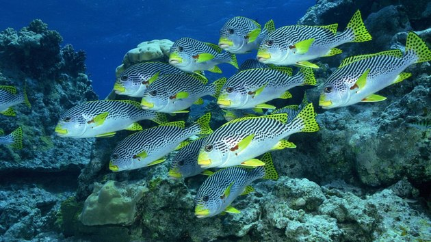
Os peixes são animais com o corpo coberto por escamas e respiração branquial (retiram oxigênio da água). Não controlam a temperatura do corpo (pecilotérmicos). São exemplos de peixes: o dourado, a arraia e o tubarão.
Anfíbios
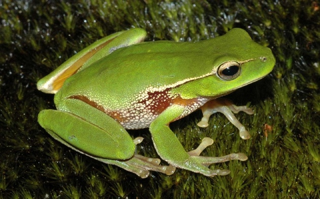
Os anfíbios são animais que dependem da água na fase larval (respiração branquial) e passam por uma metamorfose corporal na vida adulta e adquirem a respiração pulmonar, é o caso dos sapos, rãs, pererecas e salamandras. Eles são ainda animais pecilotérmicos.
Répteis
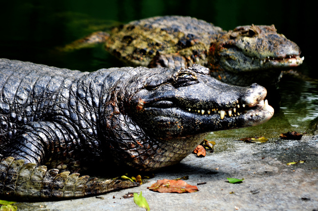
Os répteis são animais que possuem respiração pulmonar e corpo coberto de escamas ou carapaça. Podem viver na água ou na terra e são pecilotérmicos.
São exemplos as tartarugas, jacarés e lagartos.
Aves
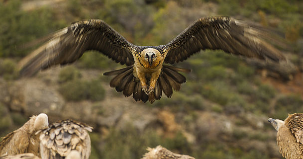
As aves são animais com o corpo coberto de penas e que possuem respiração pulmonar, controlam a temperatura do corpo (homeotérmicos).
São exemplos de aves: galinha, avestruz, ema, pinguim, papagaio e beija-flor.
Mamíferos
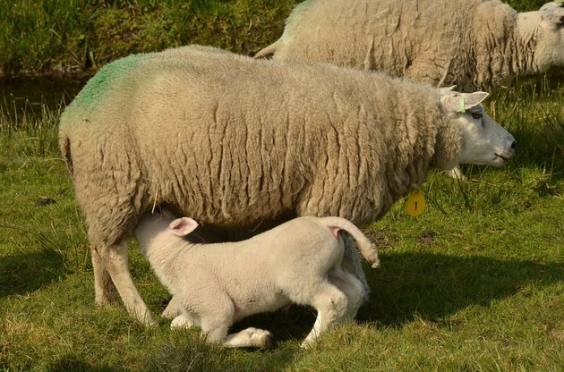
Os mamíferos apresentam pelos, são homeotérmicos e possuem respiração pulmonar. Uma das principais características do grupo é o fato das fêmeas alimentarem os filhotes através das glândulas mamárias.
São exemplos de animais mamíferos os seres humanos, gatos, cachorros e morcegos.
Os animais invertebrados são representados por inúmeros filos com características bem diferentes, mas todos são pluricelulares e não possuem parede celular.
Existem oito filos de animais invertebrados, são eles: poríferos, cnidários, platelmintos, nematelmintos, moluscos, anelídeos, equinodermos e artrópodes.
Poríferos
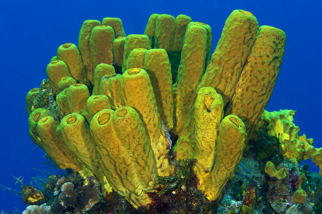
Os poríferos são animais primitivos de água doce ou salgada. Eles são organismos que não possuem órgãos, nem capacidade de locomoção e a reprodução pode ser sexuada ou assexuada.
Exemplos: esponjas.
Cnidários
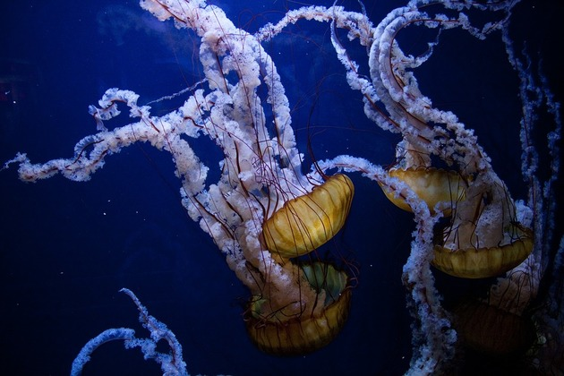
Os cnidários vivem em água doce ou salgada e alguns deles possuem capacidade de locomoção enquanto outros são sésseis.
Uma característica que os torna peculiares é a presença de um tipo celular específico, os cnidócitos. Alguns exemplos de cnidários são águas-vivas, os corais, as anêmonas-do-mar, as hidras e as caravelas.
Platelmintos
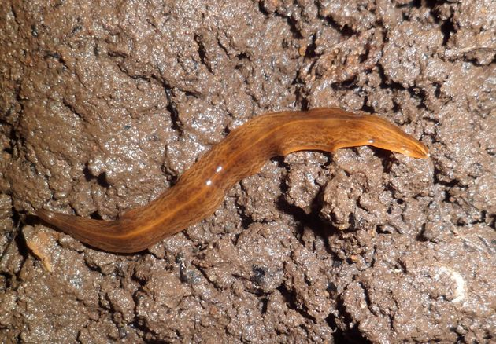
Os platelmintos possuem corpo achatado e podem ser de vida livre ou parasitas.
São exemplos, as tênias, solitárias, esquistossomos e planárias.
Nematelmintos
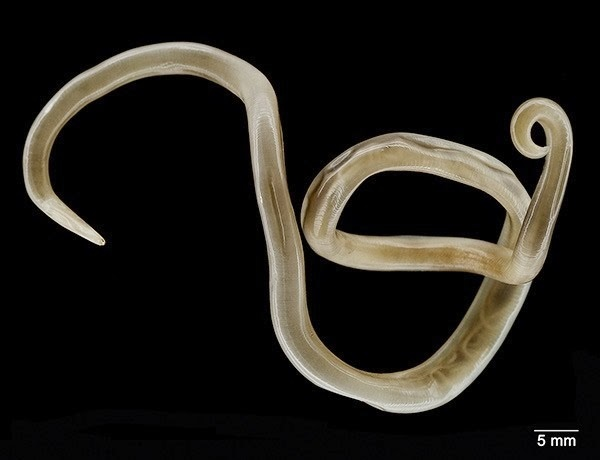
Os nematódeos ou nematelmintos possuem o corpo cilíndrico e podem ser de vida livre ou parasitas de humanos e plantas. São exemplos as lombrigas, oxíuros e outros vermes.
Anelídeos
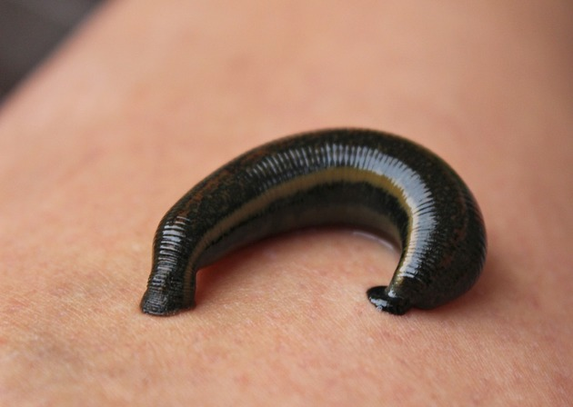
Os anelídeos possuem o corpo segmentado, composto por anéis. Eles vivem em habitats úmidos na terra e nas águas doces ou salgadas.
São exemplos: minhocas, poliquetas e sanguessugas.
Equinodermos
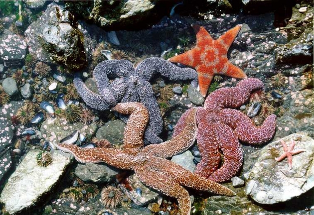
Os equinodermos são animais marinhos com presença de exoesqueleto calcário e sistema hidrovascular. O corpo deles possui simetria pentarradial, ou seja, com 5 lados iguais.
São exemplos: pepinos-do-mar, estrelas-do-mar e ouriços-do-mar.
Moluscos
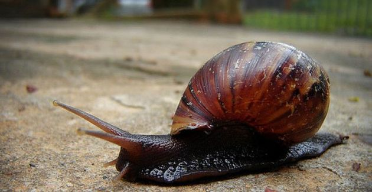
Os moluscos são animais de corpo mole com presença de concha, a qual pode ser interna (lulas e polvos) ou externa (caramujos, mexilhões). Eles habitam ambientes de água doce ou salgada e terras úmidas.
São exemplos de moluscos, os mexilhões, polvos, lulas, lesmas, ostras e caramujos.
Artrópodes
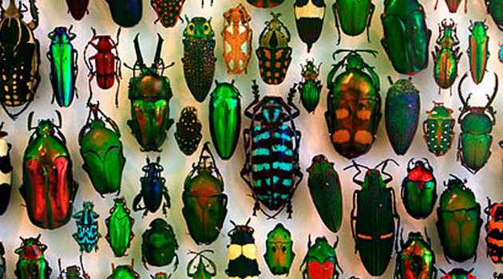
Os artrópodes compreendem um filo muito diversificado. Eles são caracterizados pelo corpo segmentado e presença de exoesqueleto de quitina.
Os principais artrópodes são:
• Insetos: borboletas, abelhas, baratas, moscas;
• Aracnídeos: aranhas, ácaros, escorpiões, carrapato;
• Miriápodes: centopeia, lacraias, gongolos;
• Crustáceos: lagostas, caranguejos, siris, camarões.